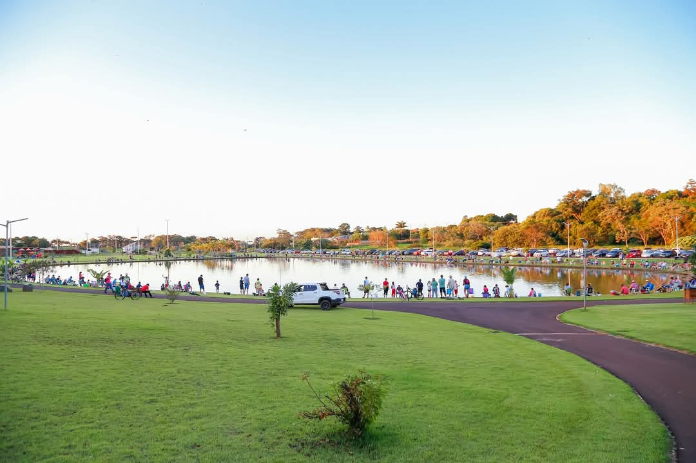
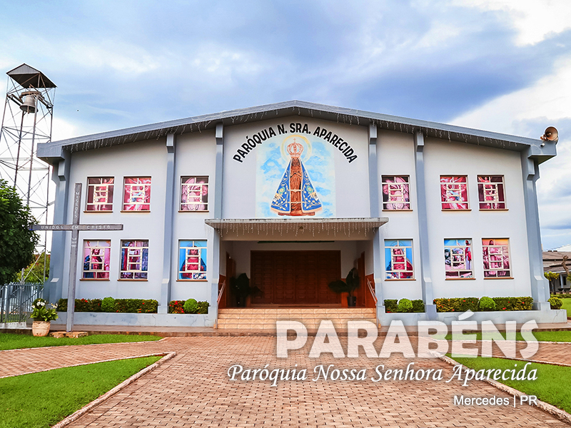
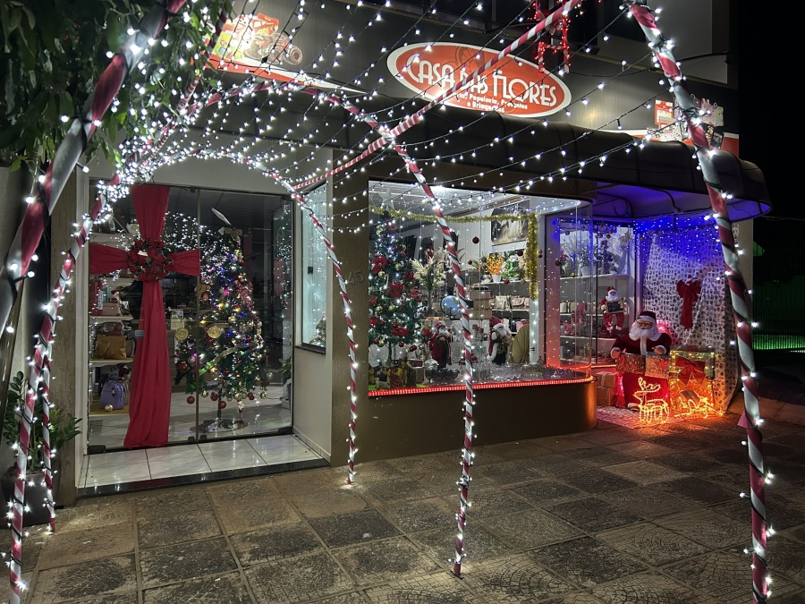
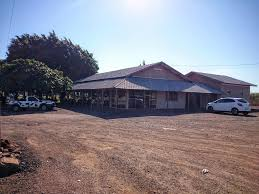
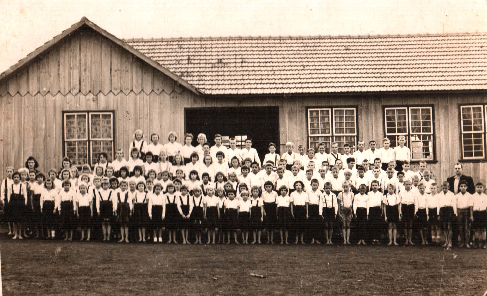
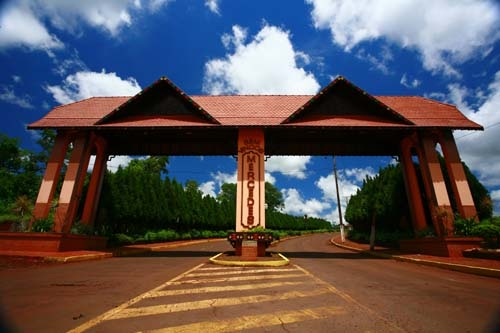

Explore espaços verdes, parques e ambientes ideais para relaxar com a família e amigos.
Ver mais
Descubra as igrejas e capelas históricas da zona rural, marcos religiosos e culturais da comunidade.
Ver mais
Conheça os principais comércios locais da zona rural e fortaleça a economia da região.
Ver mais

Conheça a rica história de Mercedes, desde sua fundação até os dias atuais, e descubra as raízes que moldaram essa comunidade única.
Ver mais
Explore os locais mais icônicos e visitados de Mercedes, que representam a história e a cultura desta cidade encantadora.
Ver mais
Visitar a Rota é como voltar no tempo. Cada capela, venda antiga ou propriedade familiar traz lembranças de um passado cheio de histórias, tradições e encontros. Para os mais velhos, é reencontrar memórias; para os mais jovens, é descobrir as raízes de Mercedes. Uma verdadeira celebração da conexão entre o campo e a cidade!